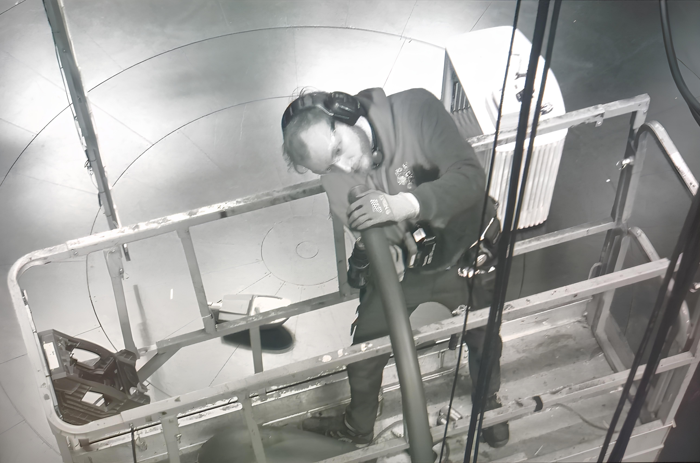

Tidligere prosjekter
Hålogaland teater

Lysmester
- Little Shop of Horrors (2024)
- Stein i lomma (2024)
- Historier om å (ikke) komme hjem (2023)
- Kjære Albert (2023)
- KULA Compagnie: Underground Birds (2023)
- Tante Grusom (2023)
- Den Gylne Drage (2022)
- Snøfall (2022, 2023)
- Messias (2022)
- Flere farger (2022, 2023)
Videotekniker
- Min Briljante Veninne (2022)
Følgespot
Lys på konserter
- Tromsø World Festival: Pongo (Driv, 2022)
- Insomnia festival (Driv, 2021)
- Støttekonsert for Gaza: Chris Medina, Gatas Parlament (Driv, 2023)
- Senjahopen (Driv, 2021)
- Bukta for alle: The Impossible Green, Storm (Buktafestivalen, 2024)
- Bukta Nasch: Viking_Death_Trap.exe (HT Teatercafèen, 2024)
- Aiming for Enrike (Driv, 2020)
- Erlend Ropstad (Driv, 2021)
- Amadou & Mariam (Driv, 2021)
- Rammsund (Driv, 2021)
- Das Body (Driv, 2021)
- Frøkedal (Driv, 2021)
- Inge Bremnes (Driv, 2021)
- Bats Of Congress (HT Teatercafèen, 2024)
- Soppgirobygget, Den BB, Kevin Lauren (Driv, 2022)
- Planet Remina (Driv, 2021)
- A Million Pineapples (Driv, 2020)
- Gipsy Chicken (Bastard Bar, 2021)
- Simmer Dim (Driv, 2021)
-
Bukta Live helaften: The Late Great, Blondekant, Vilde Bye, Elias
Jung (Driv, 2021)
- TS Live (Driv, 2021)
- Cult Member (Driv, 2020)
- MVNISK (Driv, 2020)
- Lys på moteshow (Driv, 2021)
- Eksamenskonsert med musikkonservatoriet, Vokal (Driv, 2021)
Lys på teaterstykker
- Verdt mer (Rådstua teaterhus, 2022)
- Glør (Hammerfest, 2021)
Andre prosjekter
- Lystekniker under Festspillene i Nord-Norge (Sentralen, 2024)
- Lystekniker på "Tore Sagen gjør standup" (Tromsø kulturhus, 2022)
-
Lage grunnrigg og lys-momenter i dramasal på UiT
(2021)
- Lys og lyd til DJ og konsert hos Prelaten (2021)
- Stagehand på By:Larm (2021)